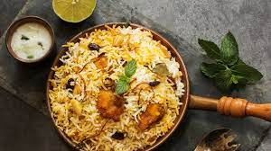

Biryani Recipes

Biryani is one of the most popular dishes in South Asia, as well as among the diaspora from the region. Similar dishes are also prepared in other parts of the world such as in Iraq, Thailand, and Malaysia.
Biryani is the single most-ordered dish on Indian online food ordering and delivery services.
Ingredients
- (3 Cubes) MAGGI Magic Cubes Chicken
- (4 Tablespoons) Ghee
- (2) Onion
- (3.5 Cups) Water
- (1.35 Cups) Rice
- (1 Pinch) Salt
- (3 Tablespoons) Coriander Leaves
Recipe instructions (taken from the book)
- Step 1:-
Min Prepare ingredients as mentioned in the list
- Step 2:-
Heat ghee in a pan, and add cinnamon, cloves, green cardamom, star anise, whole peppercorns and black cardamom. Then, add onions and sauté till golden-brown.
- Step 3:-
Add the ginger-garlic paste and sauté till the raw smell is gone. Add the red chilli powder, turmeric powder and coriander powder. Sauté for a minute.
- Step 4:-
Add tomatoes and sauté till they are well-cooked. Then, add the chicken pieces and sauté for 5 minutes.
- Step 5:-
Add water, crumbled MAGGI Magic Cubes (Chicken), mint leaves and coriander leaves. Mix well and add salt to taste. Add the rice when the water starts to boil.
- Step 6:-
Lower the flame, cover and cook till the rice and chicken are done.
- Step 7:-
Serve hot with raita.